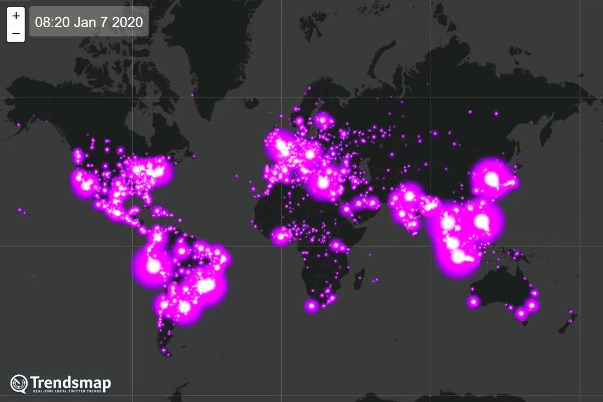

Introduction
The topic of our final project is fandom comparison in different cultures. Currently, we only focused on 3 regions, which are: China, Japan, and Western.
Cyberbullying an important topic that is worth exploring because more often than not, today's youth are required to use the internet for homework and to socialize with their classmates, and for young people on social media, cyberbullying is a major issue. According to a 2016 survey from the Cyberbullying Research Center, 33.8 percent of children aged 12 to 17 had been victims of cyberbullying at some point in their lives. As we can see, cyberbullying has wreaked havoc on the lives of young people, and studies have found that victims of cyberbullying are more prone to have low self-esteem, sadness, and suicidal ideation.
In this website, we've included available anti-cyberbullying resources, especially websites and hotlines, so that teachers, parents, and students can be more aware of this controversial topic and ready to take proper action when this occurs.
What is Cyberbullying?
Cyberbullying is bullying that occurs via the use of digital technology such as mobile phones, computers, and tablets. Cyberbullying may take place via SMS, Text, and applications, as well as online in social media, forums, or games where individuals can see, engage in, or exchange material. Cyberbullying is defined as sending, uploading, or spreading nasty, damaging, false, or derogatory content about another person. It might include disclosing personal or private information about another individual, which causes shame or humiliation. Some forms of cyberbullying are illegal or criminal in nature.